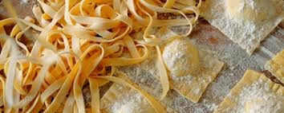
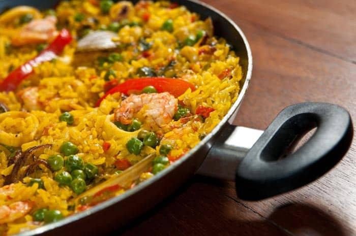

- 23 de Enero - 2019
 Animate a las pastas caseras.En tu batidora de mesa Peabody Smartchef, debés colocar los huevos, el agua y la harina, para luego conectar el batidor plano y, durante aproximadamente 30 segundos, trabajar en velocidad baja.
Luego de eso, debés quitar el batidor plano para conectar el gancho especial para masas, trabajar así en velocidad baja y amasar por 2 minutos.
Amasar manualmente cerca de 1 minuto, cubrir y dejar que la masa repose durante unos 15 minutos antes de trabajarla.
¡Ya podés darle a la masa tu forma favorita para comer las mejores pastas!
- 16 de Enero - 2019
 Como hacer una paella con mariscos paso a pasoLimpia y pela las gambas. Usa las conchas y cabeza para hacer caldo. Resérvalo.
También limpia los calamares y pícalos en ruedas.
Limpia también las conchas de mar con abundante agua para que suelten cualquier residuo de arena.
En una paellera, ó sartén muy grande y profunda, sofríe en aceite de oliva, la cebolla, el ajo, pimiento y tomate picados en cuadritos pequeños. Agrégale un poco de pimienta y sal.
Pon los calamares y luego las conchas de mar. Deja que se cocinen unos minutos. Verás que comienza a hacerse un caldo, esto está bien.
Agrega las 2 tazas de arroz y revuelve para que se mezcle todo. Seguidamente ponle 4 tazas del caldo de gambas que hiciste anteriormente. Si no te alcanza, completa con agua.
Revuelve bien. Agrega una cucharadita de colorante amarillo ó las hebras de azafrán y deja hervir por unos 3 minutos.
Aun con líquido en la paellera, agrega los guisantes frescos, las gambas y el perejil previamente picado muy pequeñito. Chequea la sal y la pimienta y agrega de ser necesario.
Deja cocinar hasta que esté casi seco el líquido. En este momento puedes ponerle unas tiras de pimiento para decorar y algunos langostinos con su concha.
Baja el fuego y tapa.
Deja cocinar por 15 minutos y prueba el grano. Si está listo retira del fuego y sirve tu paella de marisco con un chorro de aceite de oliva por encima para darle aun más sabor.
® Todos los derechos reservados. Cocino con Gusto 2019 Blog de recetas de cocina sencillas.